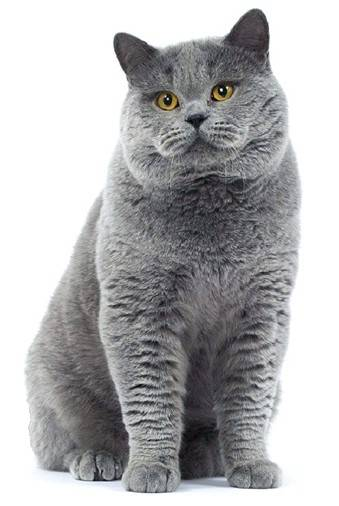

Обращаться только на ВЫ!
Описание кота
Британские короткошёрстные (рус. — британцы) — короткошёрстные кошки. Как правило, это сильные и крепкие кошки. Бывают от средних до крупных размеров. Согласно легенде, являются потомками Чеширского кота.
Шерсть у британской кошки очень пушистая и мягкая, хоть и довольно короткая. Британским кошкам свойственно много различных окрасов, существует около 30 оттенков цветов их густой, роскошной шерсти, самые популярные — сплошные (серо-голубой, голубой, чёрный, лиловый, шоколадный), табби и серебристые табби, их разновидности: пятно, полоса и мрамор.